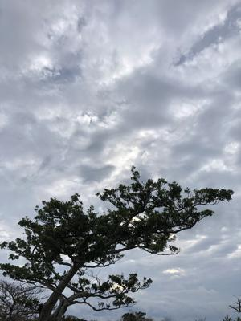
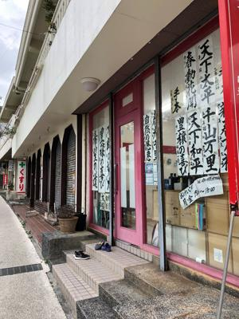
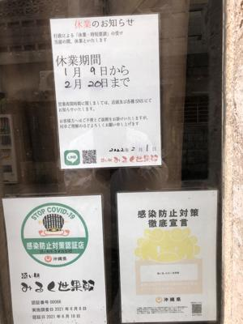
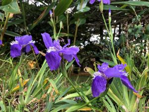

うるがいの話 ある日
最新: 健康保険【うるがいの話 ある日】とは 一日だけのプログです
『うるがいの話』の最新一日だけのプログで、通信料が少なく経済的だ。カニの画像をクリックすると全ての日付が載る『うるがいの話』サイトを表示します
|
|
【うるがいの話】 うるがい(ｳﾙｶﾞｲ urugai)とは、『もずくがに』の名前でとても大きくなります。 |
|---|---|
|
|
【カミマヤーの話】 猫のことを方言でマヤーといいます。カミマヤー（kamimayaa）とは、神の猫のことです。 |
|
【タナガーの話】 たながー（ﾀﾅｶﾞｰtanagaa）とは手長えびのことで、何種類かあり大きいのは車 エビぐらいになります。 |

|
【ぶながぁの話】 ぶながー(bunagaa)とは、赤い髪の毛、赤い身体、そして身長は１ｍ２０ｃｍ ぐらい、川の蟹を食べているの目撃された。場所は沖縄県国頭郡大宜味村のと ある村僕の隣近所に住んでいる爺さんから、聞いた話です。 |
|
|
【ギーマの話】 ギーマ(giima)とは、山原の里山に咲くスズランに似た、 花を付けます。実は食べられます、 気が付くと口の周りが紫になっています。 |
2022年02月08日 (火）健康保険
16:37
  
昨日健康保険料を振り込む、健康保険任意継続制度は来月で最後である。４月
から国民健康保険へ切り替えないといけないと、ヨメに話した。その数秒後に
固定電話に電話が鳴る、ディスプレイをみると １０月に保険支援 を受けた人
からだ。なんというシンクロだ電話をとり『支援のあとお菓子を控えたことと
、尿路結石の改善のため水分補給をおつゆ（３食）で対応しています』と報告
する。血圧を測っていますか、おつゆは減塩で！、他に変わった事はあります
か、と聞かれたので『あとは目です、面談のあと２度程、炎症を起こしました
、眼科へはいきましたけど』と真面目に答える。もともとは、１月１５日頃に
電話を架けてくれる予定だったが、コロナのせいで昨日になったですと言われ
、努力されていること分かりましたこの旨を保険組合に報告します、またよろ
しくお願いいたします、と言われ電話をきる。またはもうないけどとは言えな
かった。昨日ジョギングの帰りに書道塾見ると子供たちが居た。一か月ぶりに
みる光景で少しうれしくなる、日曜日首里の飲み屋さんは２月２０日まで休業
と店の入口にお知らせを貼っていた。目のつらさはメガネからきていると思う
、今日メガネ屋さんに行く。２年前レンズを変えたが、最近はパソコンを見る
のにピントがあわなくなってキツイです、と目の検査をする。近視の度合いが
、さらに緩くなってきている、この調子で行けば今回が最後になるはずと、長
い付き合いの店員さんに言われる。おお、では１年後には裸眼でパソコンを見
ることになるかも、と変だがうれしくなる。支払いは専用店向けの『なは買エ
ール商品券』と端数部分は現金で済ます。

１６時２４分 ビットコインの総資産 ￥１４、９８１↑かなり